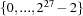

Limitations
In general, Mozart has very few system limitations. Memory allocation is dynamic. The number of record fields, the size of arrays and dictionaries, the number of characters in an atom, the number of threads, integer precision, etc., are all limited only by available memory. Memory is requested from the operating system according to need. The allocation strategy is user-customizable (see Chapter 23 of ``System Modules''). If memory use decreases, then all unused memory is eventually returned to the operating system.
However, a few limits remain.
Maximum Memory Size
Mozart has been ported to 32-bit and 64-bit architectures. On 32-bit architectures, a program can use all available memory (that is 4GB) which in the worst case (due to copying garbage collection) means that Mozart can have an active heap (that is alive data structures) of 2GB. This is currently also shared with 64-bit architectures.
A crude but effective way to go beyond this limit is to use the Remote module to create new sites (i.e., OS processes). This is especially effective if communication to the new processes is by shared memory. For more information on Remote, see Chapter 13 of ``System Modules''.
Garbage Collection
All memory areas of the virtual machine are garbage collected except for the atom table and the table of record arities. In particular, the area used to store program instructions is garbage collected.
We recommend to avoid as much as possible dynamically creating atoms (with String.toAtom or VirtualString.toAtom) or records with new arities (for example, with Record.filter). Tuples do not have entries in the arity table, so they are not subject to this restriction.
Cloning
Arities of records are not cloned. This is typically correct. Only if the arity contains names that are local to a subordinated space this is incorrect.
Choice Points
The number of alternatives of a choice point must be less than  (i.e., 134217726).
(i.e., 134217726).
Constraint Variables Across Spaces
The following restriction is very, very, very small! The implementation does currently not support that a so-far unconstrained variable is locally (inside a local computation space or inside a guard of a combinator) constrained to a constraint-variable (for example, a finite domain variable). This can be avoided by constraining the variable globally to a constraint-variable.
For example, instead of
local X in or X::1#2 [] X::3#4 end endone should always use
local X={FD.decl} in or X::1#2 [] X::3#4 end end
Record Arities
Arities of records are not cloned. This is typically correct. Only if the arity contains names that are local to a subordinated space this is incorrect.
Procedures
Procedures can have no more than 4096 arguments.
Finite Domains and Finite Sets
The range of a finite domain variable is from 0 to (i.e., 134217726).
The range of a finite set domain variable is from to .
Integers and Floats
Integers of 28-bit or less precision are stored in registers. Floating-point numbers and integers needing more than 28-bit precision are stored on the heap.
This means that calculations are significantly faster and memory-efficient when done with small integers rather than with floating-point numbers or big integers.
Compiler
The compiler is part of the interactive run-time system. It may use large amounts of memory on large programs or programs that access large data structures in the run-time environment. This memory use is temporary. After the compiler completes, the memory is eventually returned to the operating system.
Distribution
See the distribution tutorial ``Distributed Programming in Mozart - A Tutorial Introduction'' for a list of limitations related to distribution and fault tolerance.